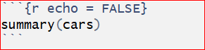
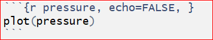
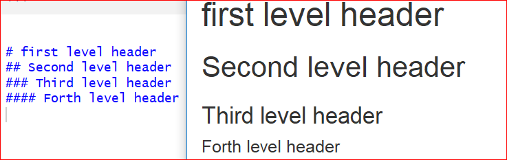

Chapter 7 Advanced topics
7.1 Introduction to R Markdown
Let’s start learning R Markdown from its cheat sheet. Click the RStudio IDE under Help \(\rightarrow\) Cheatsheets \(\rightarrow\) R Markdown Cheat Sheet. As the cheet sheet explained, the R Markdown (.Rmd) file can combine your code and the output in one file, and produce various formats, such as html, pdf, MS Word, or RTF documents.
To create a R Markdown file by the following process. Firstly, you can open a new .Rmd file at File \(\rightarrow\) New File \(\rightarrow\). In the open window, feel free to change the Title. For example, you can change the Untitled to MyFirstRmd. Then choose the default output format from the three options: HTML, PDF or WORD. The click “OK”.
Figure 7.1: Create a new RMarkdown file
A new .Rmd file is created.
The first part of the file is the YAML (Yet Another Markup Language) header. The YAML header is surrounded by dashes “—”. See the example below. It specifies the key arguments for the document, such as title, author, date, and output format. The output format is html in the example. You may see the output: pdf_document, which means that the default format you have chosen is PDF when you created the file.

The second part of a .Rmd file is surrounded by ```. They are called chunks of R. An chunk is shown below.

The chunk is a collection of r code. You can run each chunk by clicking the right arrow on the top right of the chunk or by pressing the shortcut Ctrl+Shift+Enter. Then R executes the code and displays the outputs inline with the code. See the example below.
summary(cars)## speed dist
## Min. : 4.0 Min. : 2.00
## 1st Qu.:12.0 1st Qu.: 26.00
## Median :15.0 Median : 36.00
## Mean :15.4 Mean : 42.98
## 3rd Qu.:19.0 3rd Qu.: 56.00
## Max. :25.0 Max. :120.00You can find manys options for chunks in the R Markdown Cheet Sheet. let’s take a look at some of the chunk options that you’ll use frequently.
1, eval = FALSE stops code from being evaluated. See the chunk below which displays the code only. The code won’t be evaluated and therefore does not have any results in the final document.

2, include = FALSE runs the code, but does not display the code or results in the final document. You can use the

3, echo = FALSE hides the code from the final document, and only presents the output obtained from the chunk.

Another chunk below displays only the plot in the final document. The code does not show up in the final document since the echo = FALSE parameter was added to the code chunk.

4, message = FALSE prevents messages from apprearing in the final document.
5, warning = FALSE prevents warnings from showing up in the final document.
6, results = ‘hide’ hides printed output.
7, fig.show = ‘hide’ hides plots.
8, error = TRUE allows the render to continue even if code returns an error.
The third part of a .Rmd file is the text mixed with symbols like # or *.

You can type your text like how you do in MS Word file. The pound symbol # implies a heading. The number of pounders indicate the heading level, it runs from 1 to 6. One # presents the first level header, two #s implies the second level header, and etc. Here is an output of various level headers.

The symbol * arounds a word before and after will give an italic text format. If two *s around a word before and after will bold the word. Such as, *Italic* and **bold** will be Italic and bold in the output file.
The last step is to obtain the output by clicking the Knit button on the top of the .Rmd file. You will be asked to name the file and save it to your PC if it is the first time you knit the file. Do as instructed, then an output file will be opened automatically.
7.2 Tidyverse
Tidyverse is collection of powerful R packages. The packages include ggplot2, dplyr, readr, purr, tidyr, and tibble. They were all written by Hadley Wickham, a true hero in the open-source R world. Following the same design philosophy and grammar, these powerful packages are designed to make R code easier to read. As they are more intuitive, some people argue that beginners should start by learning them, instead of the base R. We even already start to use this package in chapter 5. Now Let’s explain the dplyr package in a little detail for manipulating iris data set.
#install.packages("dplyr")
library(dplyr)In dplyr, we use the pipe operator %>% to send data to the next stage. This is similar to the “+” operator we used in ggplot2. To create a new data frame for setosa with sepals longer than 4.0:
iris %>%
filter(Species == "setosa", Sepal.Length > 4)Add a new column that contains the ratios of sepal length to sepal width:
iris %>%
mutate(ratio = Sepal.Length / Sepal.Width)Sort by sepal length in ascending order:
iris %>%
arrange(Sepal.Length)The power of dplyr is that we can connect these pipe operators to define a work flow. Suppose we want to see the Iris setosa flowers with the largest ratio of sepal length to sepal width.
iris %>%
filter(Species == "setosa") %>% # filter rows
select(Sepal.Length, Sepal.Width) %>% # select two columns
mutate(ratio = Sepal.Length / Sepal.Width) %>% # add a new column
arrange(desc(ratio)) %>% # sort in descending order
head() # only show top rows. No more pipes, end of sequence.## Sepal.Length Sepal.Width ratio
## 1 4.5 2.3 1.956522
## 2 5.0 3.0 1.666667
## 3 4.9 3.0 1.633333
## 4 4.8 3.0 1.600000
## 5 4.8 3.0 1.600000
## 6 5.4 3.4 1.588235filter( ), mutate( ) and arrange( ) are 3 “verbs” that operate on the data frame sequentially. head( ) is the function that only shows the top rows. Notice the pipe operator %>% at the end of each line. This code is much easier to read by humans, as it defines a sequence of operations.
Two other useful verbs are group_by( ) and summarise( ). They can be used to generate summary statistics. Below, we use group_by to split the data frame into 3 data frames by the species information, compute the mean of sepal lengths and width, and then combine. So it is “split-apply-combine”.
iris %>%
group_by(Species) %>% # split by Species
summarise(avgSL = mean(Sepal.Length), avgSW = mean(Sepal.Width)) %>%
arrange(avgSL)## # A tibble: 3 x 3
## Species avgSL avgSW
## <fct> <dbl> <dbl>
## 1 setosa 5.01 3.43
## 2 versicolor 5.94 2.77
## 3 virginica 6.59 2.97Here we created a new data frame with the mean sepal length and sepal width for each of the 3 species. Obviously, we can change mean( ) to many other functions. This makes it very easy to summarize large data sets.
Exercise 7.2 Fill in the blanks.
1, Read in the heart attack data same as you used in chapter 4.
2, Calculate the average cost per day for patients with different DIAGNOSIS codes.
3, Restrict to females aged older than 20 and younger than 70 who stayed at least one day.
4, Sort the results in descending order. 5, Use one command with multiple steps.
heartatk4R <- read.csv("____Insert Your own Path_____/heartatk4R.txt",
header = TRUE, sep = "\t",
colClasses = c("character", "factor", "factor", "factor",
"factor", "numeric", "numeric", "numeric"))
head(heartatk4R) library(dplyr)
df <- heartatk4R %>%
filter(SEX == "______" & AGE > 20 _____ AGE < 70 & ________) %>%
group_by(___________) %>%
___________(CostPerDay = ___________) %>%
summarise(AvgCostPerDay = __________(CostPerDay, na.rm = _______)) %>%
___________(-AvgCostPerDay)
df7.3 Interactive plots made easy with Plotly
#install.packages("plotly")
library(plotly)
g <- ggplot(iris, aes(Petal.Width, Petal.Length , color = Species)) + geom_point()
ggplotly(g)We first generated the plot using ggplot2 and stored it in an object g, which is rendered interactive with Plotly. If you mouse over the plot, the values are highlighted. You can also select an area on the chart to zoom in.
The R community is uniquely supportive. There are lots of free online books, tutorials, example codes, etc. Here are some helpful websites and information.
7.4 Shiny Apps
Recent developments in R made it easy to create interactive charts and even complex websites. Without any web development experience, I created a site entirely in R ( iDEP http://ge-lab.org/idep/ ) to enable biologists to analyze genomic data on their own. My blog (http://gex.netlify.com ) is also created in Rstudio.
7.4.1 Install the Shiny package by typing this in the console.
#install.packages("shiny")7.4.2 Create a Shiny web app is a piece of cake

Start a new Shiny app use the shortcut shown above. Or, select File -> New File -> Shiny Web App from the RStudio main menu. Give your app a name like test1 and note where the app will be stored. The nice nerds at Rstudio understand the power of an example. A small, but functional app is shown, defined in a file called app.R. Click on Run App on the top right of the script window; you have a histogram that can be customized by a sliding bar. There are two functions: ui() defines the user interface, and server() specifies the logic.
7.4.3 Let’s play!
Change the color by changing the col = ‘darkgray’ in line 44 to your favorite color, such as ‘green’, ‘red’, etc. To make it colorful, set it to col = rainbow(10) so we can use ten colors on a rolling basis.
Switch the data. Change line 40 to visualize the iris dataset: x <- iris[, ‘Sepal.Length’]
The default number of bins of 30, specified at line 25, is probably too big. Change it to: value = 12.
We obviously can change ‘Sepal.Length’ to other columns. Would it be cool if the user can choose? We need to add a control widget by inserting this line of code after line 20: selectInput(“cid”, “Column”, choices = colnames(iris)),
Do not forget the comma at the very end! Now run this app. We can now select the columns, but the app does not do anything with it. We need to use the selected column in the server logic to customize the plot. We will change the line 41 from x <- iris[, ‘Sepal.Length’] to x <- iris[, input$cid ].
To change the title we can first define main title and add it in the hist() function as:
titl <- paste("Histogram of", input$cid, sep = " ")
hist(x, breaks = bins, col = 'green', border = 'white', main = _______)We can build a more complex app by adding a normal distribution line by expanding line 45: hist(x, breaks = bins, col = ‘green’, border = ‘white’) into these:
h <- hist(x, breaks = bins, col = rainbow(10), border = ‘white’)
yfit <- dnorm(bins, mean = mean(x), sd = sd(x))
yfit <- yfit * diff( h$mids[1:2]) * length(x)
lines(bins, yfit, col = “blue”)
Steps: 1, Change the selectInput() line as its original with all columns selected. 2, Separate the variables into two groups, numeric variables (columns 1 throught 4) for histogram and categorical variables (5th column) for pie plot. 3, Use if() and }else{ for each group.
library(shiny)
# Define UI for application that draws a histogram
ui <- fluidPage(
# Application title
titlePanel("Interactive page for iris data"),
# Sidebar with a slider input for number of bins
sidebarLayout(
sidebarPanel(
selectInput("cid", "Select the column", choices = ___________),
sliderInput("bins",
"Number of bins:",
min = 1,
max = 50,
value = 12)
),
# Show a plot of the generated distribution
mainPanel(
plotOutput("Plot")
)
)
)
# Define server logic required to draw a histogram and pie plot
server <- function(input, output) {
output$Plot <- renderPlot({
x <- iris[, input$cid]
# draw the histogram with the specified number of bins for variable columns
________ (input$cid %in% colnames(iris)[______]){
bins <- seq(min(x), max(x), length.out = input$bins + 1)
titl <- paste("Histogram of", input$cid, sep = " ")
hist(x, breaks = bins, col = 'green', border = 'white', main = titl)
# draw the pie plot for catogorical column Species
__________
count <- table(x)
labl <- paste(names(count), "\n", count, sep = "")
titl <- paste("Pie plot of", input$cid, sep = " ")
pie(count, labels = labl, main = titl)
}
})
}
# Run the application
shinyApp(ui = ui, server = server)You can publish your app online by clicking on the Publish button at the top right of the app window and following the instructions. And show it off by sending an URL. More details can be found in these excellent tutorials: https://shiny.rstudio.com/tutorial/written-tutorial/lesson1/
Solutions to these challenges can be found at GitHub https://github.com/gexijin/teach/blob/master/app.R